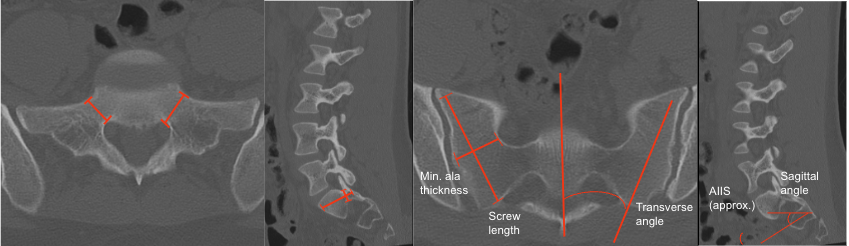

Adapted from: Feger J, Campos A, Murphy A, et al. CT lumbar spine (protocol). Reference article, Radiopaedia.org (Accessed on 03 Jan 2026) https://doi.org/10.53347/rID-90041
1) Description of Measurement
Sacral morphometry defines the osseous corridors available for S1 pedicle screws and S1/S2 alar-iliac (SAI) screws, ensuring safe trajectories that avoid neural foramina, sacral canal, and pelvic viscera while maximizing fixation strength. Measurements include:
These measurements are critical for preoperative planning of pelvic fixation in deformity, trauma, and revision surgery.
2) Instructions to Measure
A. S1 Pedicle Morphometry
Axial CT (through S1 pedicles):
Sagittal CT:
B. Sacral Ala / SAI Corridor
Axial CT (through S1 or S2 ala):
Sagittal CT:
3) Normal vs. Pathologic Ranges
4) Important References
Yilmaz E, Abdul-Jabbar A, Tawfik T, et al. S2 Alar-Iliac Screw Insertion: Technical Note with Pictorial Guide. World Neurosurg. 2018 May;113:e296-e301. doi: 10.1016/j.wneu.2018.02.009. Epub 2018 Feb 10.
O'Brien JR, Yu WD, Bhatnagar R, et al. An anatomic study of the S2 iliac technique for lumbopelvic screw placement. Spine (Phila Pa 1976). 2009 May 20;34(12):E439-42. doi: 10.1097/BRS.0b013e3181a4e3e4.
Kebaish KM. Sacropelvic fixation: techniques and complications. Spine (Phila Pa 1976). 2010 Dec 1;35(25):2245-51. doi: 10.1097/BRS.0b013e3181f5cfae.
Jain A, Brooks JT, Kebaish KM, Sponseller PD. Sacral Alar Iliac Fixation for Spine Deformity. JBJS Essent Surg Tech. 2016 Mar 9;6(1):e10. doi: 10.2106/JBJS.ST.15.00074.
5) Other info....
S2AI screws provide lower profile fixation and reduce wound complications compared with traditional iliac bolts.
Always assess neural foramina, sacral canal, and sciatic notch proximity before finalizing trajectory.
In dysplastic sacra or severe deformity, 3-D navigation is strongly recommended.